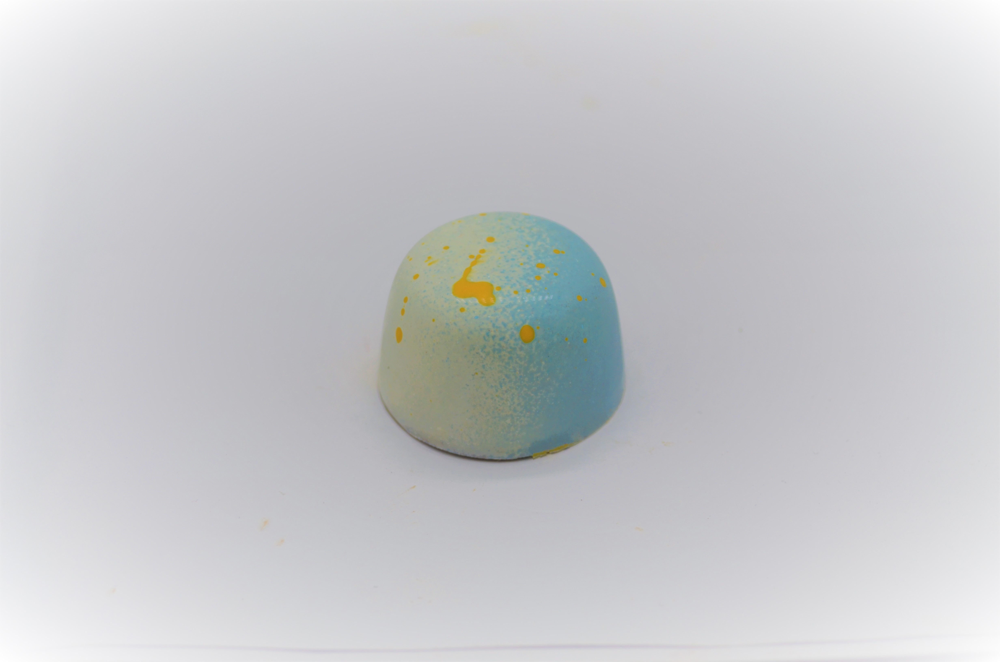
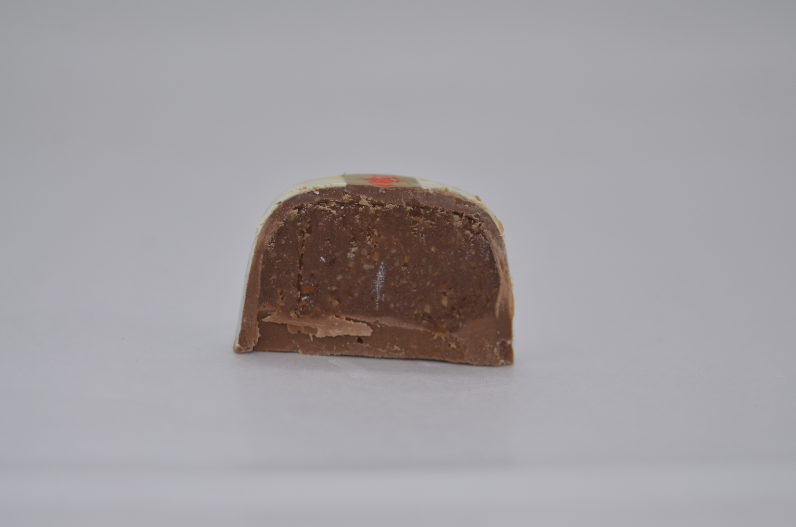

Dalfó
El bastión del chocolate
Queres aprender a hacer nuestros bombones?
Dulce de leche
| Ingrediente |
Cantidad |
Unidad |
| Crema de leche |
875 |
g |
| Leche 3% |
375 |
g |
| Azúcar blanca |
440 |
g |
| Glucosa |
250 |
g |
| Bicarbonato de sodio |
5 |
g |
| Escencia de vainilla |
15 |
g |

Instrucciones
-
En una olla grande mezclar la crema de leche, la leche 3%, el Azúcar blanca, la glucosa y cocinar a fuego fuerte, siempre mezclando.
-
Una vez que hierva agregar el bicarbonato de sodio, reducir a fuego medio y continuar revolviendo.
-
Luego de 2 horas la mezcla estara espesa y lista para retirar. Agregar escencia de vainilla y dejar enfriar a temperatura ambiente.
-
Guardar en contenedor y llevar a la heladera con film en contacto o similar.
Nutella
| Ingrediente |
Cantidad |
Unidad |
| Avellanas repeladas |
500 |
g |
| Aceite vegetal |
50 |
g |
| Chocolate con leche |
500 |
g |

Instrucciones
-
Tostar avellanas en el horno a fuego fuerte. Retirar y dejar enfriar.
-
Procesar avellanas con aceite vegetal hasta formar una pasta mas bien liquida.
-
Derretir chocolate y agregar pasta de avellanas.
-
Dejar enfriar en heladera.
Mermelada de naranjas
| Ingrediente |
Cantidad |
Unidad |
| Naranjas |
750 |
g |
| Azúcar blanca |
375 |
g |
| Agua |
100 |
g |

Instrucciones
-
Rallar piel de la naranja y reservar.
-
Quitar con cuchillo la parte blanca de las naranjas.
-
Trocear naranjas.
-
Mezclar naranjas, Azúcar blanca,agua y ralladura en olla y cocinar durante 1 hora a fuego medio.
-
Cuando llega a la consistencia esperada retirar y dejar enfriar.
-
Guardar en recipiente en heladera con film en contacto.